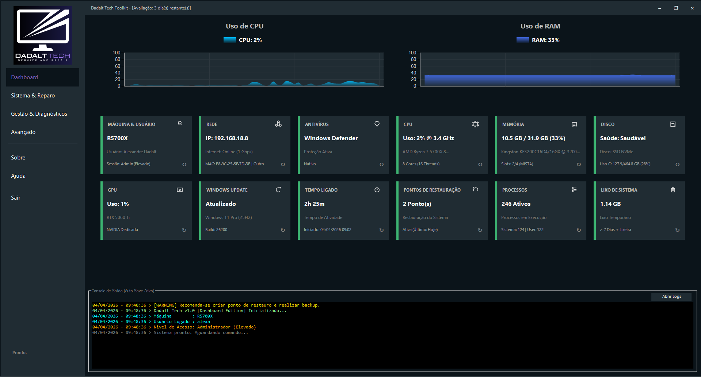
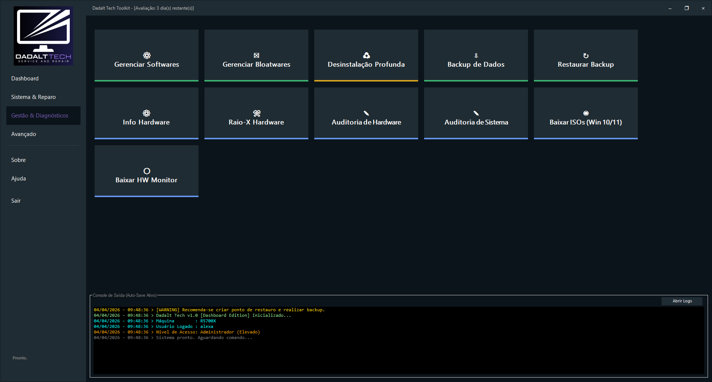
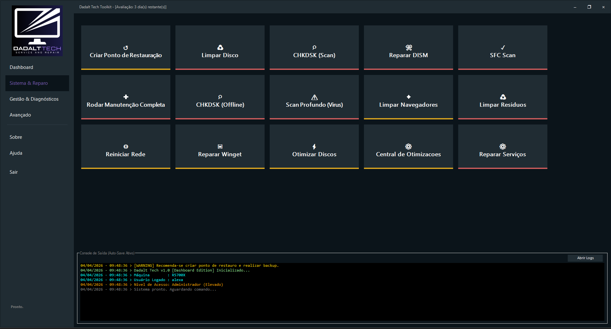

🛠️ Dadalt Tech Toolkit - Dashboard Edition
A Ferramenta de Manutenção de Elite para Profissionais de TI
Cansado de usar dezenas de ferramentas diferentes, scripts espalhados e interfaces lentas que congelam o PC durante a manutenção? Conheça o Dadalt Tech Toolkit, um dashboard unificado, moderno e ultrarrápido, desenvolvido por técnicos, para técnicos.
Recupere o seu tempo, aumente a produtividade da sua bancada e entregue computadores mais rápidos aos seus clientes.
🚀 Comece a Usar Agora
O DT Toolkit é 100% portátil (não requer instalação). Pode baixar e testar todas as ferramentas gratuitamente por 3 dias antes de decidir assinar.
💎 Escolha o seu Plano
"Aviso sobre a Libertação da Chave de Acesso" * Pix e Cartão de Crédito: O acesso e o envio da chave são imediatos (24 horas por dia, 7 dias por semana). * Boleto Bancário: O sistema é 100% automatizado. A chave de ativação será gerada e enviada para o seu e-mail apenas após a compensação bancária, o que pode levar até 2 dias úteis.
🔥 Por que escolher o Dadalt Tech Toolkit?
O mercado está cheio de ferramentas gratuitas, mas nenhuma oferece a integração, a velocidade e a segurança que o seu trabalho profissional exige.
| O Problema Comum | A Solução Dadalt Tech |
|---|---|
| Interfaces que congelam durante a reparação. | Motor Multithread: Dashboard ultrarresponsivo que nunca trava, graças à arquitetura avançada de Runspaces. |
| Desinstaladores que deixam lixo no registo. | Desinstalação Profunda ("O Caçador"): Rastreia e destrói pastas residuais e chaves de registo órfãs. |
| Ter de digitar a chave em cada PC do cliente. | Licença Portátil: Ative no Pen Drive e trabalhe offline por até 3 dias em qualquer máquina. |
| Ferramentas genéricas que assustam o cliente. | GUI Premium: Interface moderna, DPI Aware (perfeita em 4K) que passa credibilidade ao seu serviço. |
📸 Uma Tour pelo Dashboard
📊 O Coração do Sistema
O Dashboard unificado dá-lhe acesso instantâneo a todas as ferramentas essenciais. Limpo, moderno e direto ao ponto.

🧹 Desinstalação Profunda e Gestão de Softwares & Bloatwares
Visualize rapidamente o que está instalado, incluindo Bloatwares nativos do Windows. Use "O Caçador" para garantir uma remoção completa, sem deixar rastos. Instale pacotes de softwares essenciais em massa e de forma silenciosa.

🚀 Otimizações e Manutenção Num Clique
Aplique dezenas de tweaks de performance (VisualFX, Telemetria, Explorer) e execute rotinas completas de reparação do sistema (SFC, DISM, CHKDSK) com um único clique. Monitore o progresso em tempo real sem lentidão.

🔒 Segurança e Ativação Cloud
O Dadalt Tech Toolkit utiliza um sistema de licenciamento moderno e seguro baseado no Firebase.
- Teste Grátis: Inicie um período de avaliação de 3 dias diretamente no dashboard (requer internet). O trial é vinculado ao Hardware ID (HWID) da máquina, garantindo total segurança.
- Assinatura Premium: Ative a sua chave portátil e leve-a no seu Pen Drive para usar em qualquer cliente sem precisar digitar a senha novamente.
⚠️ Nota Importante sobre Antivírus (Falso Positivo)
Devido à natureza avançada desta ferramenta (manipulação profunda de registo, encerramento de serviços e compilação de scripts), o Windows Defender pode sinalizá-la erroneamente como um "Falso Positivo".
Isto é perfeitamente normal em ferramentas profissionais de TI. Recomendamos adicionar o executável às exclusões do seu antivírus. O nosso código é transparente, seguro e focado na produtividade.
Desenvolvido por Dadalt Tech | Contato: suportedadalttech@gmail.com